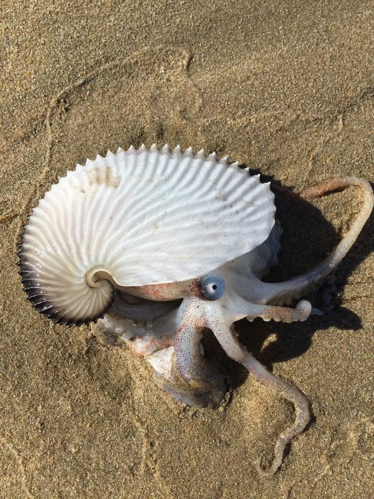

软体动物 · 动物界
船蛸 Argonauta argo

雌性会用腕足分泌的石灰质薄壳托着卵囊漂浮的远洋章鱼，外壳薄如纸，曾被称为“纸鹦鹉螺”，与鹦鹉螺并非同类。
- 分类
- 门软体动物门纲头足纲目八腕目科船蛸科属船蛸属
- 栖息环境
- 热带和亚热带海洋的表层，浮游生活，随洋流漂移
- 地理分布
- 全球热带和亚热带海域，包括太平洋、大西洋和印度洋
- 保护级别
- 暂无评估；中国未列入国家重点保护野生动物名录
物种志
雌性船蛸会分泌一个薄如纸的石灰质外壳，壳面有放射状的肋纹，直径一般 10–25 cm，看起来像是某种海螺的壳。但船蛸其实是章鱼的近亲，属于八腕目，这个外壳不是真正的贝壳，而是由腕足分泌形成的育儿囊。雄性体型极小，只有雌性的几十分之一，通常只有 1–2 cm。
船蛸分布于全球热带和亚热带海洋的表层，过着浮游生活。雌性用两条特化的腕抱住外壳，壳内藏着卵，靠喷水缓慢游动；雄性用交接腕把精荚送入雌性体内，交接腕会断留在雌性体内。它是肉食性动物，捕食浮游生物、小鱼和甲壳类。雌性把卵产在壳内，带着卵囊在海上漂浮，直到幼体孵化，之后雌性死亡。船蛸的外壳薄而精美，常被冲上海滩，过去常被误认为是鹦鹉螺的壳。目前它没有IUCN 的正式评估，中国未将其列入国家重点保护野生动物名录。
形态与习性
- 外壳雌性腕足分泌石灰质薄壳，直径一般 10–25 cm
- 雌雄差异雌性有壳，雄性体型极小，只有雌性的几十分之一
- 食性捕食浮游生物、小鱼和甲壳类
- 繁殖雌性把卵产在壳内，带卵囊漂浮至幼体孵化
- 分布全球热带和亚热带海域的表层
- 习性浮游生活，靠喷水缓慢游动
趣味知识
- 船蛸的外壳薄如纸，过去常被误认为是鹦鹉螺的壳。
- 只有雌性船蛸才有外壳，雄性体型极小，只有雌性的几十分之一。
- 雌性把卵产在壳内，带着卵囊在海上漂浮，直到幼体孵化。